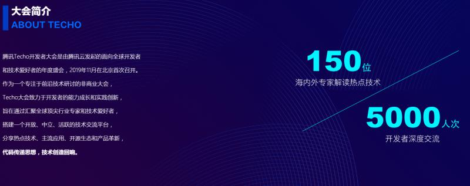
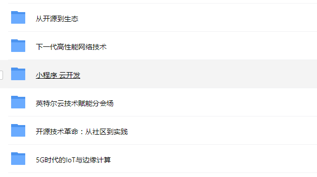
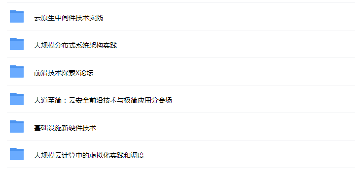
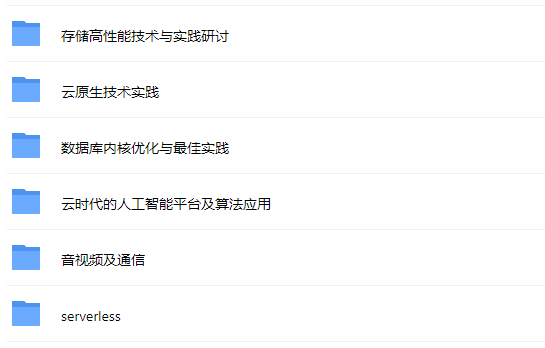

原文出处:本文由博客园博主张坚提供。
原文连接:https://www.cnblogs.com/jianzh5/p/11898526.html
原文连接:https://www.cnblogs.com/jianzh5/p/11898526.html
腾讯云年度的开发者大会已经落幕，大会包括1场前沿技术主峰会，18个技术专场，150位海内外技术专家，28个互动展区，8场动手实验室，23小时小程序云开发极限编程，1场数据库诊断大赛。
内容上涵盖了最新云计算发展趋势，来自谷歌、Netflix、腾讯等技术先锋分享的云上基础设施演进、云原生、机器学习、音视频等；同时，腾讯在大会现场发布了四大开源联合项目：分布式消息中间件TubeMQ、Tencent Kona JDK、分布式HTAP数据库TBase、企业级容器平台TKEStac。
大会简介：

大会嘉宾
有没有你认识的呢？
大会内容



本次大会独家的109份干货PPT，关注公众号:JAVA日知录,回复关键字techo即可领取
请关注个人公众号:JAVA日知录